数据分布取决于使用和经营权限
跨行核验和物流金融呈现不同的授权、加工和结果交付关系。权利范围仍需通过具体授权链确认。
原文 S45 · S16资料截至 2026-11-15
公开材料目的性选例，样本覆盖范围取决于披露情况。合作库与交易库存在交叉，行业总量和份额待核实。
依据研究报告第七章。样本截至2026-11-15，关键事实与文献于2026-11-19复核。
跨行核验和物流金融呈现不同的授权、加工和结果交付关系。权利范围仍需通过具体授权链确认。
原文 S45 · S16许可、账号、模块和服务随项目变化。公开总额可用于合同结构分析。
原文 S19 · S24 · S36 · S37 · S38物流金融披露混合机制名称。计量基数、归因方法和风险承担仍待复核。
原文 S45 · S46 · S16可信数据空间提供受控协作场景。估值和分配还需权利、用量、成本与效果记录。
原文 S51 · S52 · S53 · S38三年均为10终端、约一年、成交36.8万元，主要服务范围基本一致
边界 · 不能断言实际签署合同、税费、每个终端模块完全相同；不能把总额除以10当官方单价
2025—2026为38账号且2个GEL；2026—2027为33账号、2个GEL并新增2个Client API，金额分别披露
边界 · 配置与账号数变化，不能据总额差异推断单价下降或折扣
原始来源可靠度与产品/期限/授权/单位可比性分别评价；C013真实性A1但可比性仅B，C012真实性A2但可比性C
边界 · 不能因来源可靠就自动判定可横向比较
项目查询 2026-11-14 · 原文 S14 · S17 · S18 · S19 · S21 · S22 · S23 · S24 · S25 · S26 · S27 · S28 · S32 · S34 · S36 · S37 · S38
声明书记载拟议参与职责、授权及结果交付设计。E052 补充其证据性质。
边界 · 实际运营进度、费用、调用量及收益未取得独立证据。
项目查询 2026-11-15 · 原文 S45
金融机构提供脱敏支付/信贷/营销数据与欺诈标签，运营商提供经授权脱敏的通信行为等数据，依托隐私计算和联邦学习联合建模；参与单位为湖北移动和中移系统集成
边界 · 未披露具体金融机构名单、费用、利润、分成比例和审计报告；成效数字为案例披露口径
项目查询 2026-11-15 · 原文 S46
贵州数据宝作为公共数据授权运营单位，与交通运输部门、网商银行、满帮等合作，以数据产品调用+场景赋能分成模式维持数据汇聚更新，并通过API赋能信贷、保险和供应链金融
边界 · 分成比例、计量基数、结算周期、成本扣除、风险承担和合同相对方未公开；效果数字不是审计收益
项目查询 2026-11-15 · 原文 S16
案例分别披露交易、服务/调用、使用效果或政策核算要求，足以证明这些概念对应不同对象与现金流层级
边界 · 任何一层都不能在缺少成本、归因、权利和合同数据时自动换算成另一层
项目查询 2026-11-15 · 原文 S11 · S12 · S16 · S39 · S40 · S45 · S46
关键案例 · C013
原始来源可靠度与产品/期限/授权/单位可比性分别评价；C013真实性A1但可比性仅B，C012真实性A2但可比性C
边界 · 不能因来源可靠就自动判定可横向比较
项目查询 2026-11-14 · 原文 S14 · S17 · S18 · S19 · S21 · S22 · S23 · S24 · S25 · S26 · S27 · S28 · S32 · S34 · S36 · S37 · S38
行动计划定义可信数据空间并提出可信管控、资源交互、价值共创和安全等能力建设要求
边界 · 不能把政策目标写成已经完成的市场成果，也不能推断固定商业模式或收益
项目查询 2026-11-15 · 原文 S51
支持企业依法依合同开发产品或服务、探索授权使用分享收益、加强治理和采用可信数据空间/隐私计算等技术
边界 · 不能推出企业普遍完成数据资产化或统一采用分成合同，政策鼓励不等于市场结果
项目查询 2026-11-15 · 原文 S52
案例披露金电信科承担试点、接入多类政务和产业数据、建立数据产品目录、使用隐私计算与区块链并形成多方生态
边界 · 案例中的18个大类、200余场景及业务改善属于官方案例披露，不能视为行业覆盖率、市场份额或经审计因果效果
项目查询 2026-11-15 · 原文 S53
分布现状
选取典型主体，沿着数据类型、业务场景与授权责任观察分布。行业数量及资产份额缺少同口径资料。
A规则与案例事实+B关系分析
A规则与产品事实+B关系分析
A产品与采购事实+B关系分析
A规则与案例事实+B关系分析
A监管事实+B关系分析
E033;E043 · 原文 S44
A采购事实+B权利分析
A交易与规则事实+B关系分析
A政策与案例事实+B关系分析
A案例事实+B关系分析
A法律与案例事实+B关系分析
MC004 的职责及结果交付属于创新应用声明书所载设计；独立运营、使用量、费用和收益均待核实。原文 S45
交易现状
按金额性质筛选代表性证据。每条金额保留币种、计价单位、数量、期限与授权，公告结果、合同公示与拟定采购条件分别标注。
每个项目占一行。年份取主公告或源表的记录日期。证据性质匹配该项目下任一条记录，列表摘要随所选证据性质更新，展开后可查看同项目全部记录。
此项目无公开金额记录。
支持产品名、工商银行与上海电力达成交易及金融用途
边界 · 不能推出交易金额、授权期限、交付方式及效果
项目查询 2026-11-14 · 原文 S11
工商银行与上海电力在上海数据交易所达成企业电智绘交易，电力数据用于企业金融产品和服务
边界 · 金额、字段、加工主体、交付方式、平台收费与收益分配未公开
项目查询 2026-11-15 · 原文 S11
此项目无公开金额记录。
S55 补证上海银行与上海大智慧财汇完成场内数字人民币支付交易；产品名称及投研用途沿用S12历史记录，待原公告复核。
边界 · 不能推出金额、定价方法或数据授权范围
项目查询 2026-11-14 · 原文 S12
S55 补证上海银行与上海大智慧财汇完成场内数字人民币支付交易；产品名称及投研用途沿用S12历史记录，待原公告复核。
边界 · 数字人民币是结算方式而非分配机制；金额、平台费、授权和内部分润未公开
项目查询 2026-11-15 · 原文 S12
E049 · 旧交易所入口本轮超时。交易双方与支付方式以 S55 补证，产品名和用途沿用历史记录，待原公告复核。 原文 S12 · S55
此项目收录 1 条金额证据。
CNY 10,000
首年半价；报价不等于实际成交价
原文 S14支持10000元/月/用户及首年半价并确认含虚机/实时与历史行情/API等服务
边界 · 不能视为2026年实际成交价或全成本
此项目收录 1 条金额证据。
CNY 8,000
首年半价；可能含本地化部署但具体附加费用未披露
原文 S14支持8000元/月/用户/首年半价/每交易日18:00通过Rsync提供增量数据/可本地化部署
边界 · 不能视为2026年实际成交价或无限制授权
此项目收录 5 条金额证据。存在多种金额性质，详见下方记录。
CNY 120,000
会员单位总采购超过10年次的超过部分半价
原文 S14CNY 30,000
不得与Level-2不加条件比较
原文 S14CNY 30,000
不得与股票Level-1不加条件比较
原文 S14CNY 10,000
数据市场/年份范围未披露
原文 S14CNY 20,000
数据市场/年份范围未披露
原文 S14支持Level-2 12万元/年、Level-1和期权各3万元/年、日K 1万元/年、分钟K 2万元/年及批量优惠条件
边界 · 不能与按月云服务/API/定制模型或实际采购金额直接比较
此项目无公开金额记录。
支持项目参与方、模型产品名称、SaaS/API/本地化部署等输出方式
边界 · 不能替代具体合同、审计报告、成交价或分润证据
项目查询 2026-11-13 · 原文 S16
平安产险联合平安科技、金融壹账通和大湾区金融研究院开发保险风控项目，存在模型、SaaS、API和本地部署
边界 · 具体需方合同、费用、成本、利润与联合方分润均未披露；案例成效不能视为审计收益
项目查询 2026-11-15 · 原文 S16
合同金额字段待核实；产品内容为供应商招募公告中的采购范围，具体合同条件待核实。
此项目收录 1 条金额证据。
暂缓展示
金额待核实。动态公示字段未完整复现，暂缓展示金额。
原文 S17S18 支持招募范围及竞争性磋商。C007 的动态合同公示按 E026 保留条件确认。
边界 · 合同金额、交付条件和授权范围仍需正式证据。
S18 支持需求范围。S17 为官方动态合同公示入口。
边界 · 静态副本未完整复现金额等动态字段。
此项目收录 4 条金额证据。存在多种金额性质，详见下方记录。
CNY 368,000
高校需求样本；不得代表商业银行或证券公司；不得把总额除以10当官方单价
原文 S19暂缓展示
保留预算性质。此条金额在采购附件中，本页暂缓展示。
暂缓展示
保留最高限价性质。此条金额在采购附件中，本页暂缓展示。
CNY 3,000
不得计入金融数据库成交金额或用于产品价格比较
原文 S19支持成交36.8万元/10终端/一年期/全市场覆盖/许可维护培训支持等；采购文件合同模板披露科研使用与转授权限制
边界 · 不能把采购文件合同模板视为已签合同原件；不能把总额除以10当官方终端单价；高校样本不能代表银行证券价格
项目查询 2026-11-14 · 原文 S19
成交、采购预算、最高限价、代理费属于同一项目内不同性质的记录。
边界 · 代理费属于采购服务费用。采购附件中的预算和限价金额暂缓展示。
项目查询 2026-11-14 · 原文 S19
三年均为10终端、约一年、成交36.8万元，主要服务范围基本一致
边界 · 不能断言实际签署合同、税费、每个终端模块完全相同；不能把总额除以10当官方单价
| 年度及结果公告日 | 终端与服务 | 公告服务期限 | 成交金额（人民币元） | 依据 |
|---|---|---|---|---|
| 2024 / 2024-09-30 | 10个终端，含许可、维护与数据服务 | 签订日起一年，暂定2024-10-25至2025-10-24 | 368,000 | S32、S33 |
| 2025 / 2025-08-20 | 10个终端，含许可、维护与数据服务 | 签订日起一年，暂定2025-10-25至2026-10-24 | 368,000 | S34、S35 |
| 2026 / 2026-09-11 | 10个终端，含许可、维护与数据服务 | 公告2026-10-25至2027-10-24 | 368,000（PE009） | S19、S20 |
| 结果公告与使用期 | 终端账号 | 模块与接口组件 | 含税成交（人民币元） | 不含税口径（人民币元） |
| S24，2025-06-20；2025-06-13至2026-06-12 | 38 | 均含WFT、EDB、C01—C03实时行情，其中2个账号另含GEL VIP组件 | 2,172,956（PE016） | 2,049,958.49（PE017） |
| S37，2026-09-07；2026-08-31至2027-08-30 | 33 | 均含WFT、EDB、C01—C03实时行情，另列2个GEL VIP及2个Client API普通版组件 | 1,972,356 | 1,860,713.21 |
| 包内关系 | 编号 | 金额（人民币元） | 价格性质 | |
| 采购包总额 | PE021 | 1,543,200.20 | 中标（成交）金额 | |
| 包内EDB | PE022 | 558,200.12 | 成交合同包分项金额 | |
| 包内WFT | PE023 | 985,000.08 | 成交合同包分项金额 |
复旦大学2024—2026年连续采购
三期公告各列代理服务费人民币 3,000 元。2026年采购文件另列预算和最高限价各人民币 368,000 元，分别登记为PE010、PE011，代理费为PE012。相同金额各自保留其性质，代理费单列。签章合同、税费和逐终端授权仍未公开。已公布配置和总额可用于校内B级纵向参照，暂定起止日和实际交付条件仍需签章材料核验，结果不能外推为银行采购单价或市场价格稳定。
两期均包含软件许可和技术服务，按各自公告使用期列示，不假定连续无间断。S36的预估金额与S37的成交分别有公告依据，续期金额仅作纵向对照，未新增PE编号。账号与组件分别计量，模块独立价格、授权实际分配及付款未公开。账号和组件同时变化，现有材料无法从总额变动识别同配置降价或API分项价。采购方给出的系统衔接理由可以支持切换成本机制，具体溢价仍待同配置竞争报价验证。
两项分项之和等于一个包的总额。金额取2026-06-02公告的采购结果与主要标的信息。采购文件约定服务需求为一年并包含安装、维护、升级、支持和培训，正式许可数量下限为29个。实际许可数、EDB及WFT的许可分配、精确起止日与含税情况未公开，缺少据以计算单价的分母及核算边界。
2021年公开价目表列示云数聚1万元/月/用户、每日数据0.8万元/月/用户、历史Level-2行情12万元/年等，并包含首年和批量优惠。它证明菜单式报价存在，但截至研究基准日现行有效性未获供方确认，不能作为2026年成交价或行业基准。
原文 S19 · S32 · S34此项目收录 3 条金额证据。存在多种金额性质，详见下方记录。
CNY 500,000
预算显著高于最高限价；不得作为成交价
原文 S21CNY 235,000
不得作为成交价
原文 S21CNY 233,000
模块与税费未披露；公开招标流标后改为单一来源
原文 S23支持预算50万元/最高限价23.5万元/6账号/一年；首次流标；后续单一来源万得成交23.3万元
边界 · 不能把预算或最高限价当成交价；不能推出账号模块/税费/授权位置
支持预算50万元/最高限价23.5万元/成交23.3万元
边界 · 不能用预算或限价替代成交额；也不能仅据差额推断折扣机制
此项目收录 2 条金额证据。存在多种金额性质，详见下方记录。
CNY 2,172,956
账号模块不完全同质；不得简单除以38作为统一官方单价
原文 S24CNY 2,049,958.49
用于税口径核对而非新增样本
原文 S24支持单一来源/38账号/一年/模块组合/含税2172956元及不含税2049958.49元
边界 · 不能把总额除以38视作同质官方单价；其中2账号另含GEL导致账号不完全同质
项目查询 2026-11-14 · 原文 S24
2025—2026为38账号且2个GEL；2026—2027为33账号、2个GEL并新增2个Client API，金额分别披露
边界 · 配置与账号数变化，不能据总额差异推断单价下降或折扣
| 结果公告与使用期 | 终端账号 | 模块与接口组件 | 含税成交（人民币元） | 不含税口径（人民币元） |
|---|---|---|---|---|
| S24，2025-06-20；2025-06-13至2026-06-12 | 38 | 均含WFT、EDB、C01—C03实时行情，其中2个账号另含GEL VIP组件 | 2,172,956（PE016） | 2,049,958.49（PE017） |
| S37，2026-09-07；2026-08-31至2027-08-30 | 33 | 均含WFT、EDB、C01—C03实时行情，另列2个GEL VIP及2个Client API普通版组件 | 1,972,356 | 1,860,713.21 |
| 包内关系 | 编号 | 金额（人民币元） | 价格性质 | |
| 采购包总额 | PE021 | 1,543,200.20 | 中标（成交）金额 | |
| 包内EDB | PE022 | 558,200.12 | 成交合同包分项金额 | |
| 包内WFT | PE023 | 985,000.08 | 成交合同包分项金额 |
四川银行2025—2027年配置变化
两期均包含软件许可和技术服务，按各自公告使用期列示，不假定连续无间断。S36的预估金额与S37的成交分别有公告依据，续期金额仅作纵向对照，未新增PE编号。账号与组件分别计量，模块独立价格、授权实际分配及付款未公开。账号和组件同时变化，现有材料无法从总额变动识别同配置降价或API分项价。采购方给出的系统衔接理由可以支持切换成本机制，具体溢价仍待同配置竞争报价验证。
两项分项之和等于一个包的总额。金额取2026-06-02公告的采购结果与主要标的信息。采购文件约定服务需求为一年并包含安装、维护、升级、支持和培训，正式许可数量下限为29个。实际许可数、EDB及WFT的许可分配、精确起止日与含税情况未公开，缺少据以计算单价的分母及核算边界。
2021年公开价目表列示云数聚1万元/月/用户、每日数据0.8万元/月/用户、历史Level-2行情12万元/年等，并包含首年和批量优惠。它证明菜单式报价存在，但截至研究基准日现行有效性未获供方确认，不能作为2026年成交价或行业基准。
原文 S24 · S36 · S37境外补充案例。保留美元原币，服务和期限口径与境内采购不同。
此项目收录 2 条金额证据。存在多种金额性质，详见下方记录。
USD 225,500
预算不是成交价；禁止在未指定汇率时换算成人民币比较
原文 S25USD 223,728
精确起止日/税费/终端配置未公开；币种不同不可直接与人民币样本比较
原文 S26支持4账号/2年/22.55万美元预算/223728美元成交/单一来源续采与应用场景
边界 · 不能把预算当成交价；不能在无指定汇率时换算后与人民币样本直接比较；不能推出税费/终端配置
按公告正文展示最终含税价格。页面标题与正文性质有差异；服务期限未公开。
此项目收录 1 条金额证据。
CNY 1,091,600
服务期限未公开；账号模块组合不均一；页面标题与正文表述不一致
原文 S27支持17账号/17 WFT/12 EDB/5 API/单一来源/最终含税109.16万元
边界 · 不能推出服务期限/各模块分项/使用范围；标题与正文性质表述不一致需保留
项目查询 2026-11-14 · 原文 S27
此项目收录 3 条金额证据。存在多种金额性质，详见下方记录。
CNY 1,543,200.20
实际许可数量/EDB与WFT分配/精确起止日未公开
原文 S28 · S38CNY 558,200.12
分项许可数量和精确起止日未公开，当前无法核算单价。
原文 S28 · S38CNY 985,000.08
分项许可数量和精确起止日未公开，当前无法核算单价。
原文 S28 · S38支持总成交1543200.20元、EDB 558200.12元/WFT 985000.08元分项、一年、正式许可不少于29个、人民银行总行范围及维护培训条件
边界 · 不能把两个分项当独立交易；不少于29不是实际数量，不能计算确定单价；不能推出税费和已签合同条款
同项目的预算、限价、代理费、税口径、分项及多条公告分别归类。重点项目包括 C007 条件确认和境外补充案例 C011。
边界 · 研究记录数与独立核实的境内成交笔数口径不同。
项目查询 2026-11-14 · 原文 S17 · S18 · S19 · S21 · S22 · S23 · S24 · S25 · S26 · S27 · S28 · S38
历史失败公示待复核。后续成交及实际履行状态待核实。本案例用于需求研究，暂不计入已确认成交样本。
此项目收录 1 条金额证据。
CNY 1,160,000
历史失败原因待复核；不得纳入成交样本或据此推算年度价格
原文 S29 · S30S29 支持两年期需求及最高限价116万元。S30失败公示属于历史线索，本轮原址404。E050为当前复核边界。
边界 · 当前无法核实失败原因和后续结果，不纳入成交统计。
供应商征集调研。需求和更新要求属于调研口径，后续采购待核实。
此项目无公开金额记录。
支持328张表+1套实时数据/专线和多频推送/全行使用/SLA等需求
边界 · 页面明确调研不代表采购邀请或意向；不能推出预算/供应商/成交
项目查询 2026-11-14 · 原文 S31
没有符合条件的案例。可更换关键词或清除筛选。
选择两个项目。各列按同一字段展示合同和证据，差异以原始口径呈现。
C008 · PE009
CNY 368,000
高校采购包。按采购文件核对拟定许可，实际签章合同未公开。
原文 S19C010 · PE016
CNY 2,172,956
WFT、EDB、C01—C03 随账号提供，其中部分账号另含 GEL。续期配置变化影响可比性。
原文 S24C013 · PE021
CNY 1,543,200.20
正式许可不少于 29 个，实际许可数未公开。总额包含 EDB 与 WFT 分项。
原文 S28 · S38C013 · PE022
CNY 558,200.12
与 PE021 同一采购包。分项许可数未公开。
原文 S28 · S38C013 · PE023
CNY 985,000.08
与 PE021 同一采购包。分项许可数未公开。
原文 S28 · S38C003 · PE001
CNY 10,000
历史价目表列示的菜单报价，现行有效性待供方确认。
原文 S14C009 · PE013
CNY 500,000
用于观察前期预算，后续成交结果另见 PE015。
原文 S21C009 · PE014
CNY 235,000
采购公告披露的金额上限，后续成交结果另见 PE015。
原文 S21C009 · PE015
CNY 233,000
公开招标流标后改为单一来源。模块、授权及税费未公开。
原文 S23C007 · PE008
金额待核实
动态公示的金额字段未在既有静态留存中完整复现，暂缓展示数值。
原文 S17C001
官方交易所报道支持产品和场内交易事实。授权、具体字段、金额与服务细节未公开。
原文 S11C002
官方交易所报道支持金融资讯产品成交和数字人民币结算。金额、授权与分润未公开。
原文 S12C015
机构公开征集说明采购需求。成交结果、价格及合同条款待核实。
原文 S31
A特征已证实；B机制合理；C幅度待检验
E014;E019;E027 · 原文 S38
A产品特征已证实；价格因果待检验
A义务存在；B/C价格影响待检验
E014;E019 · 原文 S38
A场景已证实；价值贡献待验证
A数量已部分证实；规模价格机制待检验
E014;E016;E018;E019;E027;E028 · 原文 S19 · S24 · S27 · S28 · S36 · S37 · S38
A需求/模板特征；实际授权边界仍不完整
A配置已证实；B/C影响待识别
A形态已证实；价格效应待检验
A捆绑特征已证实；短期增量成本、长期成本回收要求及其对交易价格的影响未知
A期限已部分证实；期限价格方向不明
A服务条款已证实；分项价格和效果未知
E014;E019;E027 · 原文 S38
A采购路径已证实；价格作用待识别
E015;E016;E017;E023;E028 · 原文 S21 · S22 · S23 · S24 · S25 · S26 · S36 · S37
A重复采购事实；B解释；C机制待检验
A存在性强；价格幅度未识别
A制度/模板特征；实际成本与溢价未知
E003;E014 · 原文 S04
A口径已证实；风险价格影响待检验
MC004 的职责及结果交付属于创新应用声明书所载设计；独立运营、使用量、费用和收益均待核实。原文 S45
重置成本、持续更新和经济贬值
缺少供应方成本台账。成本只能支持特定口径的供给分析。
原文 S10 · S14 · S19 · S38可归因增量净现金流、期限、风险和折现
当前缺少共同基线、可审计现金流和归因数据。
原文 S04 · S16 · S38同配置信息、成交价、税费和有证据的条件调整
现有样本仅可作有限比较，无法支撑市场估值基准。
原文 S14 · S19 · S24 · S37 · S38客户授权与金融便利在MC004等可观察；现金分成未观察
数据供给关系已观察；具体分配多未公开
功能在案例和政策中存在，独立收费/分成较少披露
多案例直接证明模型开发；绩效费与分成参数未公开
固定采购和API/调用模式已观察；利润与内部拆分未公开
平台职能可观察；本研究案例未公开平台费率
技术职责直接观察；费用与分配未公开
使用场景与申报效果可观察；经审计可归因收益缺失
E034;E035;E036;E037;E038;E039 · 原文 S11 · S12 · S16 · S45 · S46
政策明确职责；研究案例未取得具体收益分配凭证
MC004 的职责及结果交付属于创新应用声明书所载设计；独立运营、使用量、费用和收益均待核实。原文 S45
A—现实案例已观察
A—报价菜单或政策允许，成交执行部分未公开
B—角色与政策有依据，案例费率未观察
A—现实案例明确披露机制存在
E039 · 原文 S16
A—政策已明确，个案执行待核实
C—本项目机制设计假设
B—政策原则；C—量化权重为研究假设
B—政策允许且MC006接近观察，完整合同未公开
B—成熟理论；C—用于本项目需新增数据
E040 · 原文 S47
C—本项目机制设计假设
数据产品调用＋场景赋能分成。具体比例、结算基数和合同详细条款未公开。原文 S16
已成交，金额未公开
E034 · 官方页面正文第89—92行 · 原文 S11
官方案例披露，未取得具体交易合同
E036 · 国家数据局案例附件第9—11页 · 原文 S16
省级官方典型案例，合同与审计材料未公开
E038 · 印刷页35—36（PDF物理页27） · 原文 S46
国家数据局案例披露真实合作机制，协议未公开
E039 · 国家数据局案例附件第29—31页，关键机制见PDF第30页 · 原文 S16
MC004 · 金融科技创新应用声明，运营费用未公开
受控计算返回特定流水真伪结果。费用、成本分担、实际调用量与分润未公开。
PDF第2—5页；附件1-2-2（PDF第93页）
原文 S45MC005 · 省级官方典型案例，合同与审计材料未公开
湖北省官方案例披露隐私计算与联合建模。现有公开披露缺少可核验的分方收益和结算。
印刷页35—36（PDF物理页27）
原文 S46MC006 · 国家数据局案例披露真实合作机制，协议未公开
国家数据局披露数据产品调用与场景赋能分成。基数、比例、周期、扣除项和实际结算未公开。
国家数据局案例附件第29—31页，关键机制见PDF第30页
原文 S16
未来趋势
时间线采用来源记录中的公布日期。技术应用条目标注案例披露，推论另列。
方法与复核
按可识别产品、许可、合同或合作项目选例，核对公告性质和重复记录，再比较合同边界。样本偏向有公开采购或披露条件的项目。
记录产品版本、期限、授权、模块、服务、成本与风险。先定义估值对象，再判断证据是否足够。
项目研究工具，待独立验证。
原文 S19 · S38先检查金额性质和同项目重复。A级要求条件一致或调整有据，B级只供有限参照，C级存在关键差异或缺项。
项目研究工具，待独立验证。
原文 S19 · S24 · S38逐步核验机制、基数、比例、结算与审计。T0 表示缺少可核验安排，MC006 的机制披露可列 T1。
项目研究工具，待独立验证。
原文 S16三项研究辅助工具依据研究报告附录 C。结果仅用于研究分析，独立核验与审计需另行开展。本页仅在当前浏览器内处理填写内容。请使用项目代称和公开证据。
为每项填写事实及出处，未知项可留空或填未公开、待核实或不适用。 本研究分析辅助框架，未经实证验证；非国家标准、正式资产评估或审计结论。
根据两条记录选条件，并注明原文依据。A/B/C 描述比较关系，文献真实性另记。 本研究分析辅助框架，未经实证验证；非国家标准、正式资产评估或审计结论。
只有相应层级各项信息可核验时才选择满足。分配层级沿机制、基数、比例与责任、实际结算、审计逐级累计。 本研究分析辅助框架，未经实证验证；非国家标准、正式资产评估或审计结论。
查询日期见研究报告的参考文献。访问外部原文可能受动态网页、网络或读取工具限制。以下保留机构原始链接及项目核查日期。